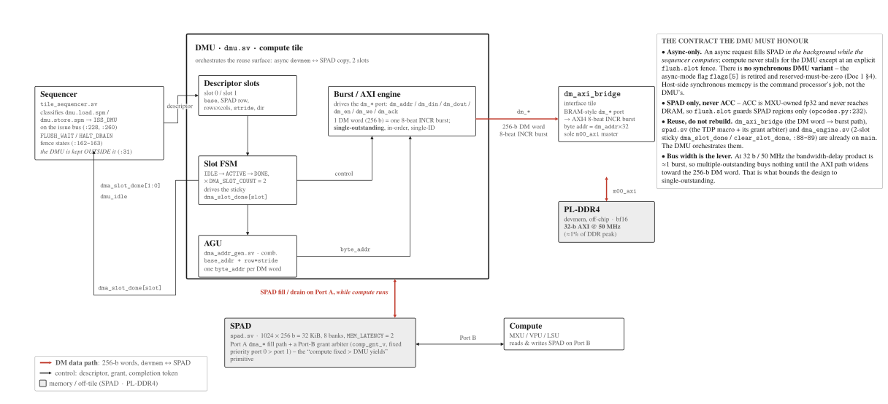

DMU: Data Moving Unit¶
The DMU is the compute tile's async data-moving unit: it streams bulk bf16 between device memory and SPAD in the background while the sequencer computes. This page documents its role and doctrine, its ISA surface, its data path to device memory, and the SPAD arbitration it participates in. Source anchors are cited as file:line. Primary SSOT: charter §4-§5 (docs/charter.md), ISA (mininpu/isa/opcodes.py, mininpu/isa/encoders.py), hardware parameters (mininpu/hwparams.py), and the DMA RTL under npu/src/.
- compute-tile DMU
- async, 2 slots
- 0x40 load · 0x42 store
- v1 single-outstanding
- SPAD only, no ACC
Role and doctrine¶
Where the DMU sits and the async model it implements.
Locked · placement
The DMU lives in the compute tile, following the Gemmini LoadController model. The interface tile stays devmem-only: it owns the AXI path to off-chip memory, not the SPAD-fill orchestration. Charter §5: "The DMA unit lives in the compute tile (Gemmini LoadController model); the interface tile stays devmem-only." The sequencer keeps the DMU external to itself: tile_sequencer exposes dma_slot_done / dmu_idle stubs and dmu.sv is a separate module (session-decision §J).
Locked · async dual-port ping-pong
The DMU is async-only (session-decision §A; ISA Doc 1 §4). An async DMA request runs in the background, filling SPAD while the sequencer computes on the compute-side SPAD port (dual-port ping-pong). Charter §5: "an async DMA request (descriptor flag) runs in the background, filling SPAD port A while the sequencer computes on port B." The compute pipeline never stalls for the DMU except at an explicit flush.slot fence: the DMU absorbs all SPAD arbitration variability by yielding (session-decision §I).
Locked · completion token
Completion is signalled by dma_slot_done[slot], the VTA-style dependence token. flush.slot is the fence that waits on it. Charter §5 / §4: "Completion = dma_slot_done[slot] (the VTA-style dependence token); flush.slot fences" and "async DMA + dma_slot_done IS in v1 ... must be RTL-verified."
Deeper dive: DMA-unit prior art (Gemmini LoadController, VTA dependence tokens)
The DMU's doctrine follows two well-known decoupled-access/execute designs. Gemmini
places a decoupled load/store/execute unit with a reorder buffer beside the systolic
array; mininpu's placement of the DMA unit inside the compute tile (the interface tile
stays devmem-only) is the Gemmini LoadController model. VTA/TVM decouples
Fetch / LOAD / COMPUTE / STORE with dependence-token queues; mininpu's
dma_slot_done / flush.slot pair (an async transfer completing sets a token that a
fence waits on) follows the same VTA dependence-token model. Both are prior art for
"move data asynchronously, synchronize with an explicit token", not novel mechanism.
Sync vs async¶
- Async is the only DMU mode in v1. The former async-mode flag (
flags[5]on the DMA opcodes) is retired and is now reserved-must-be-zero (ISA Doc 1 §4; session-decision §A). There is no synchronous DMU opcode variant. - The host-facing synchronous block transfers (host<->devmem memcpy) are a separate concern, handled by the command processor + copy engine over the AXI-Lite CMD window (charter §4), not by the compute-tile DMU.
ISA surface¶
The two DMU opcodes, their operand slots, the fence, and the slot count. All LOCKED (ISA SSOT).
| op | opcode | direction | touches | SSOT |
|---|---|---|---|---|
dmu.load.spm |
0x40 |
DRAM (bf16) → SPAD | SPAD only | opcodes.py:505 |
dmu.store.spm |
0x42 |
SPAD → DRAM (bf16) | SPAD only | opcodes.py:506 |
flush.slot |
0x53 |
fence (masked stall) | per-slot done bits | opcodes.py:510 |
halt |
0x5F |
terminal drain | all slots | opcodes.py:512 |
Locked · no ACC
The DMU never touches ACC. The dmu.*.acc opcodes are removed (no OP_DMU_*_ACC in the SSOT). ACC is MXU-owned fp32 and never reaches DRAM; async DMA targets the SPAD region only and flush.slot guards SPAD. opcodes.py:232: "The DMU touches SPAD only (ACC never reaches DRAM)."
64-bit encoding, operand slots¶
The instruction word is the fixed 64-bit format OP[63:56] | FLAGS[55:48] | op0[47:32] | op1[31:16] | op2[15:0] (ISA Doc 1 §3). The DMU opcodes use these slots (encoders.py:436-548):
| field | dmu.load.spm (0x40) | dmu.store.spm (0x42) |
|---|---|---|
op0 | SPAD dst row | SPAD src row |
op1 | literal-pool index of dram_addr (IMM_OP1) | literal-pool index of dram_addr (IMM_OP1) |
op2 | (mat_rows-1)<<8 | (mat_cols-1), packed 7+7 | packed shape, or 0xFFFF "derive at lowering" sentinel |
| pool adjacency | dram_stride is force-appended at pool[op1+1] so the descriptor-lowering pass (W6) reads addr + stride contiguously | |
flags | IMM_OP1 set (address is wide); dtype in base flags; flags[5] reserved-must-be-zero (retired async flag) | |
dram_stride= bytes-per-DRAM-row. Rowrreadsdram_addr + r*dram_stride.dram_stride=0is a first-class broadcast mode on load (all dst rows filled from one DRAM row - this is how bias is added).encoders.py:467-490.- Inline form only; the W6
assembler.pypass lowers the inline op into a descriptor + trigger. The exact descriptor format the DMU consumes is OPEN (deferred to implementation).
Locked · slots & fence
DMA_SLOT_COUNT = 2 independent async slots (hwparams.py:80). flush.slot takes a 16-bit slot bitmask in op0: bit i set = wait for slot i to drain; flush.slot 0xFFFF waits for every slot. It is the only fence primitive (the unmasked flush 0x52 is retired). halt drains all outstanding slots then asserts done. encoders.py:75-88.
Deeper dive: a worked async load --- dmu.load.spm to flush.slot
Trace one async transfer end to end. An async-flagged dmu.load.spm triggers dm_en
on the DMEM interface; the interface tile's dm_axi_bridge issues one 8-beat AXI4 INCR
burst on m00_axi (one DM word = 256 bits = one burst) and fills a SPAD row over
Port A. On completion dm_ack sets the sticky dma_slot_done[slot] token. Meanwhile
the sequencer has continued dispatching compute on SPAD Port B --- the fill and the
compute overlap (double-buffer ping-pong). A later flush.slot with slot i in its
mask fences: it spins until dma_slot_done[i] is set, then clears the bit for reuse.
Before the fence the filled region must not be relied on; after it, the data is visible
to a consuming compute op.
Data path and device memory¶

Fig. A5. DMU block: descriptor slots, AGU, SPAD port, completion path. The async
data-moving unit: 2 descriptor slots, the address-generation unit, SPAD Port A, and the
dma_slot_done completion path that flush.slot fences against.
devmem, the DM word, the AXI bridge, the bandwidth story, and SPAD arbitration priority. The dm_axi_bridge burst FSM (d-axi-bridge-fsm) and the device-memory controller are owned by the uncore; this page cites them.
| fact | value | SSOT |
|---|---|---|
| device memory | off-chip PL-DDR4, reached via dm_axi_bridge → m00_axi |
charter §5 |
| DM word width | DM_DATA_WIDTH = 256 bits (8 × 32-bit), matching SPAD row width |
hwparams.py:63 |
| DM address space | DM_ADDR_WIDTH = 27 (256-bit words); byte addr = dm_addr × 32 |
hwparams.py:62 |
| as-built AXI | 32-bit AXI @ 50 MHz (~200 MB/s, ~1% of DDR peak) | charter §5 |
| SPAD | 1024 × 256b = 32 KiB, 8 banks (row mod 8), bf16 |
hwparams.py:52,87 |
| SPAD read latency | MEM_LATENCY = 2 cycles (registered BRAM output) |
hwparams.py:66 |
Locked · bandwidth - bus width is the lever
The as-built dm_axi_bridge is 32-bit AXI @ 50 MHz. The bottleneck is bus width, not outstanding depth. At 32b/50 MHz the bandwidth-delay product is ~1 burst, so multiple-outstanding buys ~nothing until the AXI path is widened (toward the 256-bit DM-word width) and/or clocked up. Charter §6 notes the DDR/AXI clock is independent of the compute-tile clock (a CDC at the DMEM boundary lets the AXI side run at the MIG user clock, 200-300 MHz), which is the lever that makes the widened path real. This bounds v1 to single-outstanding (see §06).
Locked · SPAD arbitration priority
SPAD has a compute-side port and a DMU access path. On any structural conflict, compute has fixed priority and the DMU yields. Because the DMU is async and flush.slot-gated, yielding never stalls compute. Reuse the banked_sram arbiter, priority compute (fixed) > DMU (yields). On the as-built RTL plane the compute-side priority order is MXU > LSU > VPU; the VPU's presence on that plane is an RTL-wiring fact, not a 0.5.0 datapath claim (see the spad.md :: Ports and clients caveat). The precise handshake (dedicated Port A fill vs. a lower-priority compute master on the banked_sram grant arbiter) is deferred to implementation.
Reused RTL surface¶
Four modules already on main provide most of the mechanism. The DMU orchestrates them; it does not re-implement them.
| module | key ports (real) | already provides |
|---|---|---|
| dma_engine.sv interface_tile |
start, mode[3:0], slot_id[0:0], done; dma_slot_done[1:0] (sticky), clear_slot_done[1:0]; stream_ready; stream/BRAM control (data_write_en, instr_write_en, start_stream, read_en) |
2-slot completion tracking. Per-slot sub-FSM (IDLE/ACTIVE/DONE), round-robin fair-share arbitration between slots, sticky dma_slot_done[i] asserted on completion and held until clear_slot_done[i]. dma_engine.sv:77-111,170-244 |
| dm_axi_bridge.sv interface_tile |
dm_addr[26:0], dm_din[255:0], dm_dout[255:0], dm_en, dm_we, dm_ack <-> full m_axi master (AR/R/AW/W/B) |
BRAM-style DM port → AXI4 burst. One DM word = one 8-beat INCR burst (arlen/awlen=7, arsize/awsize=2); byte addr = {dm_addr,5'b0}. Single-ID, single-outstanding, in-order. dm_ack = combinational 1-cycle pulse in DONE. The sole m00_axi master. dm_axi_bridge.sv:35-80,84-107 |
| dma_addr_gen.sv compute_tile |
base_addr[31:0], row[7:0], stride[31:0] → byte_addr[31:0] |
Row byte-address generator (AGU). Pure combinational base_addr + row*stride (32-bit truncated). Already instantiated twice in the sequencer (foreground DMA row loop + the #222 background async-DMA track). dma_addr_gen.sv:18-25 |
| spad.sv compute_tile |
Port A DMA side: dma_wr_en, dma_wr_data[255:0], dma_write_pointer, dma_rd_data[255:0], dma_read_pointer. Port B compute masters: dma_comp_*_b (port 0) + comp1_*_b (port 1), each with *_gnt_b |
8-bank TDP scratchpad + a per-bank grant arbiter. True dual-port banked_sram: Port A DMA side, Port B carries N arbitrated compute masters with fixed priority port 0 > port 1 via comp_gnt_v / comp_conflict_bank_o (a lower-priority master advances only on a granted cycle). This grant mechanism is the "compute fixed > DMU yields" primitive. spad.sv:45-121,128-150 |
Note · RTL-vs-target framing
The as-built dma_engine.sv lives in the interface tile and decodes the host block-transfer modes (stream write/read, IRAM load); its 2-slot machinery and dma_slot_done are the completion mechanism the DMU reuses. The target DMU is a compute-tile module (dmu.sv) that drives dma_addr_gen + the dm_* bridge port and the SPAD DMA path. Reuse these ports and the 2-slot/grant primitives; do not rebuild them. How the slot machinery relocates or is re-instantiated inside the compute tile is an implementation choice.
Interfaces the DMU exposes¶
The DMU sits between the sequencer, SPAD, and the dm_* bridge port. The field set is fixed by the ISA; the exact bit-encodings are deferred to implementation.
1. Sequencer descriptor-in¶
| field | meaning | status |
|---|---|---|
base |
DRAM base byte address (row 0), from the literal pool | LOCKED present |
| SPAD row | dst row (load) / src row (store) | LOCKED present |
length (rows × cols) |
mat_rows, mat_cols (packed 7+7 in op2) |
LOCKED present |
stride |
bytes-per-DRAM-row; 0 = broadcast (load) |
LOCKED present |
| direction | load (0x40) vs store (0x42) | LOCKED present |
slot |
which of the 2 async slots this transfer occupies | LOCKED concept, OPEN encoding |
The field set is fixed by the ISA (§02). The exact wire format of the descriptor the sequencer hands the DMU (bit packing, how slot is assigned/carried, how the pool-indexed base/stride are resolved to values) is OPEN.
2. SPAD port + arbitration handshake¶
- LOCKED shape: a SPAD read/write access path (256-bit rows,
MEM_LATENCY=2) with a yield-on-conflict handshake; compute has fixed priority. - OPEN detail: whether the DMU uses the dedicated Port A fill path or is wired as a lower-priority master on the Port B
banked_sramgrant arbiter, and the exacten/gnt/retry protocol.
3. Completion out + clear¶
- LOCKED: drive
dma_slot_done[1:0](sticky, one bit per slot) on transfer completion; accept aclear_slot_done[1:0]write-1-to-clear. This is exactly thedma_engine.svcontract (dma_engine.sv:87-89) and it must be RTL-verified in v1 (charter §4).
4. flush.slot handshake¶
- LOCKED: expose per-slot status so the sequencer can masked-stall on
flush.slot(op0 bitmask) and drain all slots onhalt. The sequencer already stubsdma_slot_done/dmu_idlefor this. - OPEN: the exact busy/idle signalling and the stall-release timing contract.
5. dm_* to the bridge¶
- LOCKED: drive the
dm_addr / dm_din / dm_dout / dm_en / dm_we / dm_ackBRAM-style port ofdm_axi_bridge(dm_axi_bridge.sv:35-40); one DM word per handshake,dm_ackends the transaction. The AGU byte address feedsdm_addrvia its[DM_BYTE_SHIFT +: DM_ADDR_WIDTH]slice.
v1 scope¶
What v1 must deliver, and what is explicitly out of v1.
Locked · v1 = make-async-real, single-outstanding
v1 makes the async path real and RTL-verified: dma.load.spm / dma.store.spm run in the background, complete via dma_slot_done[slot], and are fenced by flush.slot. v1 is single-outstanding: one transfer in flight hides the latency. The two slots (DMA_SLOT_COUNT=2) exist in the HW contract, but v1 does not exploit multiple-outstanding, because at 32b/50 MHz the BDP is ~1 burst (§03). Charter §5: "[v1] = make-async-real with single-outstanding (one slot in flight hides latency)."
Deferred · [v1+], out of v1
Multiple-outstanding + coalescing + a landing/reorder buffer are [v1+], layered only after the AXI path is widened toward the 256-bit DM word. The landing/reorder buffer is sized to the bandwidth-delay product (= target BW × DDR latency). Charter §5 / §13. These are explicitly not in v1 and the v1 DMU must not be blocked on them - but its slot/descriptor structure should not preclude them.
mininpu · DMU · compute-tile overview · back to home